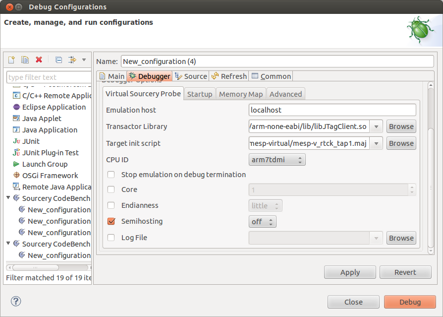

If you will be using the CodeBench source level debugger, then it will automatically start the virtual probe, and the debug sprite that controls it. You can also manually launch the virtual probe and sprite server as described in this section.
If you are using the CodeBench IDE, configure your debug launch (See Figure 7-3) and then launch the debugger.
Figure 7-3.
Debug Launch Configuration
See Table 2-1 for a description of the fields in the launch debug configuration screen. For the Virtual Sourcery Probe debug interface, there are three additional fields to set. These fields are described in Table 7-1.
Table 7-1.
Virtual Sourcery Probe Device Options
Option
Description
Emulation Host
The IP address or hostname of the PC running the TBX software. This PC is commonly referred to as the Veloce Comodel Host.
NOTE: It is recommended that you run CodeBench on a PC that is on the same LAN as the Veloce comodel host. The reason for this is because a WAN connection between the virtual probe and the Veloce is typically too slow.
Transactor Library
Uses DPI calls to send JTAG transactions to the JTAG hardware transactor. The JTAG Transactor Library sends any data received from the hardware transactor back to the
Sourcery Probe Virtual software through the transactor proxy.
Stop emulation on debug termination (Virtual Sourcery Probe)
If this option is checked, the Veloce emulation terminates when MESP/Virtual shuts down. If this option is unchecked, MESP/Virtual disconnects from the Veloce and leaves the emulation running when it shuts down.